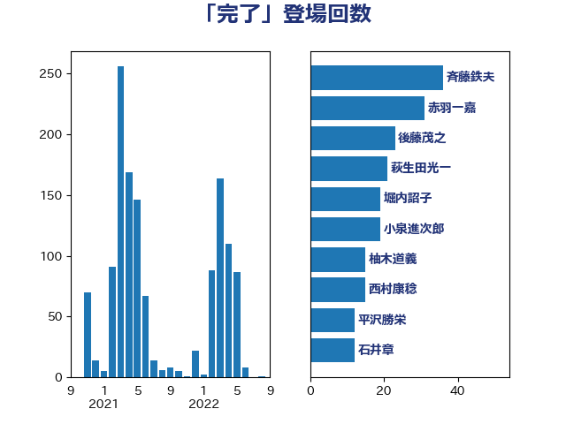

単語「完了」

| 斉藤鉄夫 | 公明党 | 36 回 |
| 赤羽一嘉 | 公明党 | 31 回 |
| 後藤茂之 | 自由民主党 | 23 回 |
| 萩生田光一 | 自由民主党 | 21 回 |
| 堀内詔子 | 自由民主党 | 19 回 |
| 小泉進次郎 | 自由民主党 | 19 回 |
| 柚木道義 | 立憲民主党 | 15 回 |
| 西村康稔 | 自由民主党 | 15 回 |
| 平沢勝栄 | 自由民主党 | 12 回 |
| 石井章 | 日本維新の会 | 12 回 |
| 岸田文雄 | 自由民主党 | 11 回 |
| 岩渕友 | 日本共産党 | 10 回 |
| 梶山弘志 | 自由民主党 | 10 回 |
| 横沢高徳 | 立憲民主党 | 10 回 |
| 西銘恒三郎 | 自由民主党 | 10 回 |
| 金子恵美 | 立憲民主党 | 10 回 |
| 山本博司 | 公明党 | 9 回 |
| 河野太郎 | 自由民主党 | 9 回 |
| 菊田真紀子 | 立憲民主党 | 9 回 |
| 大口善徳 | 公明党 | 8 回 |
| 小沢雅仁 | 立憲民主党 | 8 回 |
| 山井和則 | 立憲民主党 | 8 回 |
| 末松信介 | 自由民主党 | 8 回 |
| 田村憲久 | 自由民主党 | 8 回 |
| 田村智子 | 日本共産党 | 8 回 |
| 福島みずほ | 社会民主党 | 8 回 |
| 菅義偉 | 自由民主党 | 8 回 |
| 大西健介 | 立憲民主党 | 7 回 |
| 杉尾秀哉 | 立憲民主党 | 7 回 |
| 片山大介 | 日本維新の会 | 7 回 |
| 佐藤英道 | 公明党 | 6 回 |
| 倉林明子 | 日本共産党 | 6 回 |
| 田村まみ | 国民民主党 | 6 回 |
| こやり隆史 | 自由民主党 | 5 回 |
| 伊波洋一 | 無所属 | 5 回 |
| 吉田統彦 | 立憲民主党 | 5 回 |
| 吉良よし子 | 日本共産党 | 5 回 |
| 岸信夫 | 自由民主党 | 5 回 |
| 岸真紀子 | 立憲民主党 | 5 回 |
| 徳永エリ | 立憲民主党 | 5 回 |
| 林芳正 | 自由民主党 | 5 回 |
| 枝野幸男 | 立憲民主党 | 5 回 |
| 竹内真二 | 公明党 | 5 回 |
| 芳賀道也 | 国民民主党 | 5 回 |
| 音喜多駿 | 日本維新の会 | 5 回 |
| 和田政宗 | 自由民主党 | 4 回 |
| 塩田博昭 | 公明党 | 4 回 |
| 室井邦彦 | 日本維新の会 | 4 回 |
| 山口壯 | 自由民主党 | 4 回 |
| 川合孝典 | 国民民主党 | 4 回 |
| 川田龍平 | 立憲民主党 | 4 回 |
| 打越さく良 | 立憲民主党 | 4 回 |
| 朝日健太郎 | 自由民主党 | 4 回 |
| 杉久武 | 公明党 | 4 回 |
| 武田良太 | 自由民主党 | 4 回 |
| 江島潔 | 自由民主党 | 4 回 |
| 清水真人 | 自由民主党 | 4 回 |
| 田村貴昭 | 日本共産党 | 4 回 |
| 石井正弘 | 自由民主党 | 4 回 |
| 石橋通宏 | 立憲民主党 | 4 回 |
| 紙智子 | 日本共産党 | 4 回 |
| 西村智奈美 | 立憲民主党 | 4 回 |
| 道下大樹 | 立憲民主党 | 4 回 |
| 里見隆治 | 公明党 | 4 回 |
| 野上浩太郎 | 自由民主党 | 4 回 |
| 青木愛 | 立憲民主党 | 4 回 |
| 高橋千鶴子 | 日本共産党 | 4 回 |
| たがや亮 | れいわ新選組 | 3 回 |
| 下野六太 | 公明党 | 3 回 |
| 井上哲士 | 日本共産党 | 3 回 |
| 伊藤孝恵 | 国民民主党 | 3 回 |
| 國重徹 | 公明党 | 3 回 |
| 城井崇 | 立憲民主党 | 3 回 |
| 安江伸夫 | 公明党 | 3 回 |
| 平井卓也 | 自由民主党 | 3 回 |
| 庄子賢一 | 公明党 | 3 回 |
| 後藤祐一 | 立憲民主党 | 3 回 |
| 東徹 | 日本維新の会 | 3 回 |
| 森まさこ | 自由民主党 | 3 回 |
| 榛葉賀津也 | 国民民主党 | 3 回 |
| 江田憲司 | 立憲民主党 | 3 回 |
| 浅田均 | 日本維新の会 | 3 回 |
| 浅野哲 | 国民民主党 | 3 回 |
| 熊谷裕人 | 立憲民主党 | 3 回 |
| 田島麻衣子 | 立憲民主党 | 3 回 |
| 藤井比早之 | 自由民主党 | 3 回 |
| 藤岡隆雄 | 立憲民主党 | 3 回 |
| 足立康史 | 日本維新の会 | 3 回 |
| 足立敏之 | 自由民主党 | 3 回 |
| 階猛 | 立憲民主党 | 3 回 |
| 三木亨 | 自由民主党 | 2 回 |
| 上田清司 | 国民民主党 | 2 回 |
| 中山展宏 | 自由民主党 | 2 回 |
| 中谷一馬 | 立憲民主党 | 2 回 |
| 井上英孝 | 日本維新の会 | 2 回 |
| 佐藤茂樹 | 公明党 | 2 回 |
| 北側一雄 | 公明党 | 2 回 |
| 大西英男 | 自由民主党 | 2 回 |
| 太栄志 | 立憲民主党 | 2 回 |
| 宮内秀樹 | 自由民主党 | 2 回 |
| 宮本徹 | 日本共産党 | 2 回 |
| 小宮山泰子 | 立憲民主党 | 2 回 |
| 小熊慎司 | 立憲民主党 | 2 回 |
| 山口那津男 | 公明党 | 2 回 |
| 岡本三成 | 公明党 | 2 回 |
| 岬麻紀 | 日本維新の会 | 2 回 |
| 平山佐知子 | 無所属 | 2 回 |
| 平木大作 | 公明党 | 2 回 |
| 柴田巧 | 日本維新の会 | 2 回 |
| 櫻井充 | 自由民主党 | 2 回 |
| 河西宏一 | 公明党 | 2 回 |
| 浜田聡 | NHK党 | 2 回 |
| 浜野喜史 | 国民民主党 | 2 回 |
| 渡辺猛之 | 自由民主党 | 2 回 |
| 滝波宏文 | 自由民主党 | 2 回 |
| 田畑裕明 | 自由民主党 | 2 回 |
| 神津たけし | 立憲民主党 | 2 回 |
| 穀田恵二 | 日本共産党 | 2 回 |
| 笠井亮 | 日本共産党 | 2 回 |
| 美延映夫 | 日本維新の会 | 2 回 |
| 羽田次郎 | 立憲民主党 | 2 回 |
| 藤原崇 | 自由民主党 | 2 回 |
| 谷田川元 | 立憲民主党 | 2 回 |
| 赤澤亮正 | 自由民主党 | 2 回 |
| 長友慎治 | 国民民主党 | 2 回 |
| 長妻昭 | 立憲民主党 | 2 回 |
| 阿部知子 | 立憲民主党 | 2 回 |
| おおつき紅葉 | 立憲民主党 | 1 回 |
| ながえ孝子 | 無所属 | 1 回 |
| 三浦靖 | 自由民主党 | 1 回 |
| 三谷英弘 | 自由民主党 | 1 回 |
| 下村博文 | 自由民主党 | 1 回 |
| 中村裕之 | 自由民主党 | 1 回 |
| 中根一幸 | 自由民主党 | 1 回 |
| 丸川珠代 | 自由民主党 | 1 回 |
| 五十嵐清 | 自由民主党 | 1 回 |
| 井上貴博 | 自由民主党 | 1 回 |
| 伊佐進一 | 公明党 | 1 回 |
| 伊東信久 | 日本維新の会 | 1 回 |
| 伊藤岳 | 日本共産党 | 1 回 |
| 伊藤忠彦 | 自由民主党 | 1 回 |
| 伊藤渉 | 公明党 | 1 回 |
| 務台俊介 | 自由民主党 | 1 回 |
| 勝目康 | 自由民主党 | 1 回 |
| 勝部賢志 | 立憲民主党 | 1 回 |
| 古屋範子 | 公明党 | 1 回 |
| 古川元久 | 国民民主党 | 1 回 |
| 古川康 | 自由民主党 | 1 回 |
| 吉川ゆうみ | 自由民主党 | 1 回 |
| 吉川沙織 | 立憲民主党 | 1 回 |
| 吉田久美子 | 公明党 | 1 回 |
| 宮崎雅夫 | 自由民主党 | 1 回 |
| 宮路拓馬 | 自由民主党 | 1 回 |
| 寺田静 | 無所属 | 1 回 |
| 小林茂樹 | 自由民主党 | 1 回 |
| 山下貴司 | 自由民主党 | 1 回 |
| 山崎誠 | 立憲民主党 | 1 回 |
| 山本太郎 | れいわ新選組 | 1 回 |
| 山添拓 | 日本共産党 | 1 回 |
| 山際大志郎 | 自由民主党 | 1 回 |
| 御法川信英 | 自由民主党 | 1 回 |
| 斎藤アレックス | 国民民主党 | 1 回 |
| 斎藤嘉隆 | 立憲民主党 | 1 回 |
| 新妻秀規 | 公明党 | 1 回 |
| 早坂敦 | 日本維新の会 | 1 回 |
| 木村英子 | れいわ新選組 | 1 回 |
| 本村伸子 | 日本共産党 | 1 回 |
| 杉本和巳 | 日本維新の会 | 1 回 |
| 松川るい | 自由民主党 | 1 回 |
| 柳ヶ瀬裕文 | 日本維新の会 | 1 回 |
| 柴山昌彦 | 自由民主党 | 1 回 |
| 梅村聡 | 日本維新の会 | 1 回 |
| 森本真治 | 立憲民主党 | 1 回 |
| 横山信一 | 公明党 | 1 回 |
| 櫻井周 | 立憲民主党 | 1 回 |
| 池田佳隆 | 自由民主党 | 1 回 |
| 浮島智子 | 公明党 | 1 回 |
| 渡辺周 | 立憲民主党 | 1 回 |
| 熊田裕通 | 自由民主党 | 1 回 |
| 玄葉光一郎 | 立憲民主党 | 1 回 |
| 田中健 | 国民民主党 | 1 回 |
| 矢倉克夫 | 公明党 | 1 回 |
| 石井啓一 | 公明党 | 1 回 |
| 石垣のりこ | 立憲民主党 | 1 回 |
| 石川博崇 | 公明党 | 1 回 |
| 石田昌宏 | 自由民主党 | 1 回 |
| 磯崎仁彦 | 自由民主党 | 1 回 |
| 福岡資麿 | 自由民主党 | 1 回 |
| 稲富修二 | 立憲民主党 | 1 回 |
| 篠原豪 | 立憲民主党 | 1 回 |
| 簗和生 | 自由民主党 | 1 回 |
| 細田健一 | 自由民主党 | 1 回 |
| 舟山康江 | 国民民主党 | 1 回 |
| 舩後靖彦 | れいわ新選組 | 1 回 |
| 若松謙維 | 公明党 | 1 回 |
| 茂木敏充 | 自由民主党 | 1 回 |
| 蓮舫 | 立憲民主党 | 1 回 |
| 西田実仁 | 公明党 | 1 回 |
| 豊田俊郎 | 自由民主党 | 1 回 |
| 赤嶺政賢 | 日本共産党 | 1 回 |
| 逢坂誠二 | 立憲民主党 | 1 回 |
| 野田国義 | 立憲民主党 | 1 回 |
| 野間健 | 立憲民主党 | 1 回 |
| 鈴木俊一 | 自由民主党 | 1 回 |
| 鈴木庸介 | 立憲民主党 | 1 回 |
| 長坂康正 | 自由民主党 | 1 回 |
| 長浜博行 | 無所属 | 1 回 |
| 須藤元気 | 無所属 | 1 回 |
| 鬼木誠 | 立憲民主党 | 1 回 |
| 麻生太郎 | 自由民主党 | 1 回 |